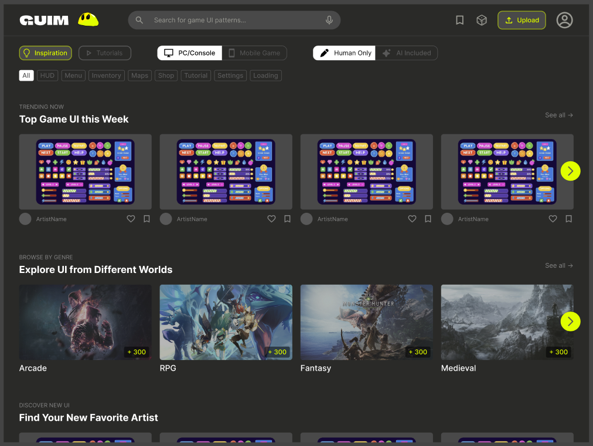
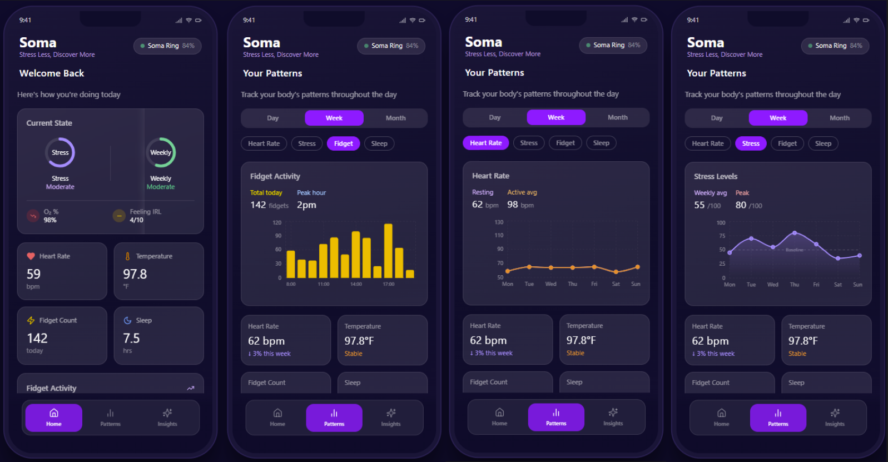

Projects
Delve into some of the projects I've worked on.

UX Design · Research · April–May 2026
GUIM — Game UI Marketplace
- Designed GUIM, a centralized platform that combines UI inspiration, tutorials, and downloadable assets to streamline the game UI design workflow for indie developers
- Conducted user research, prototyping, and iterative testing to improve usability, navigation, and content discovery across multiple design stages
- Built a high-fidelity interface focused on visual browsing, filtering, and personalization, enabling users to efficiently move from inspiration to implementation

UX Design · Research · February–May 2026
Soma Ring — Emotional Wellness Wearable
- Designed the Soma Ring, a wearable device focused on emotional wellness and stress management
- Conducted user research and iterative design sessions to understand the needs of college students managing daily stress
- Created low-fidelity wireframes, mid-fidelity prototypes, and high-fidelity mockups to explore the user experience and interface design

UX Design · Research · January–May 2025
Campus Navigation App
- Conducted user research and interviews to identify challenges students face when navigating campus
- Created wireframes, journey maps, and interactive prototypes emphasizing intuitive navigation and accessibility
- Collaborated with peers to refine the app's design through usability testing and iterative feedback

SolidWorks · FEA · February–May 2024
Sewing Machine Project
- Worked with a team of five to design over 40 individual parts and subassemblies for a working sewing machine in SolidWorks
- Responsible for the threading system and outer casing, which encases and protects internal components
- Utilized finite element analysis to test the strength and durability of the machine, specifically the foot pedal

Engineering Design · Robotics · January–May 2023
Over Terrain Vehicle
- Collaborated with a group of eight to design, build, and test an autonomous OTV on a $320 budget
- Designed and built the vehicle chassis, staying within weight and mission constraints
- Used Fusion360 to render the chassis and used PrusaSlicer to 3D print key components including the data extraction arm, gears, and motor mounts